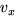
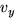
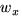
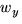
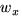
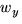

Una operació important entre vectors és el càlcul del seu producte escalar. Aquesta operació actua sobre dos vectors i dóna com a resultat un nombre real. Es denota mitjançant un punt, i es pot definir com
o, si  i  denoten les components de  i  i  les de
i  i  les de  ,
,
Quan els dos vectors són perpendiculars, el cosinus de l'angle que
formen és zero, i per tant una forma compacta de dir que dos vectors
són perpendiculars és imposar que el seu producte escalar sigui zero.